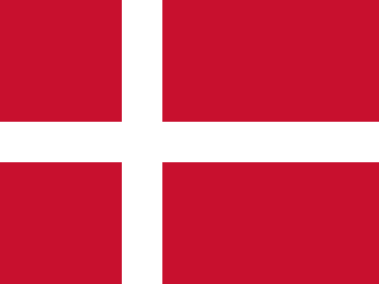

Veterinary Medicine / Veterinary Science
Veterinary Medicine / Veterinary Science
Veterinary medicine studies all aspects of animal health and disease, animal welfare and disease prevention. Alongside basic courses such as anatomy and physiology, practical clinical work with animals is an important part of the training.
Example courses
What do graduates do?
- Veterinarian
- Animal nutrition specialist
- Veterinarian in wildlife and conservation
- Researcher (life sciences)
- Ecologist
- Academic
- Science writer
Which subjects matter?
The Royal Veterinary College asks for an A in biology and chemistry at A-level for veterinary medicine (BVetMed); the third subject is open. In the IB, biology and chemistry must be 6 at Higher Level (2027 entry).
Length by country
Exams required for this field
 ESAT United Kingdom
ESAT United Kingdom
For a Cambridge Veterinary Medicine application the ESAT (Engineering and Science Admissions Test) is compulsory; pre-registration is required (2027 entry).
Toelatingsexamen dierenarts Belgium (Flemish region)
To start veterinary medicine at Flemish universities you need to take an entrance exam. The 2027 exam is on 4 July, and registration runs from 1 March to 17 May 2027.
One school from each country

University of CopenhagenDenmark33The top school in this field from each country. Rank: QS 2026 subject ranking. Only the countries we work with.
Official data window
Some countries publish official websites that let you compare fields of study using graduate job and earnings data.
United Kingdom. Shows what jobs graduates of a course go into, and what they earn 15 months, 3 years and 5 years after graduating.
Australia. The Australian Government's website. It compares up to six institutions side by side and also gives graduates' median salary.
USA. The website of the US Department of Education. It shows the cost of schools, their graduation rate and the earnings of graduates.
Frequently asked questions
Is there a YKS requirement for the recognition (denklik) of a veterinary medicine diploma?
YÖK's YKS ranking requirement applies only to medicine, dentistry, pharmacy and law diplomas. Veterinary medicine is not on this list. For the diploma you still get recognition and denklik (degree recognition) from YÖK; the preliminary application is made through e-Devlet or the YÖK website.
Can you study veterinary medicine in English in a country where English is not spoken?
Yes, for example in Hungary. The University of Veterinary Medicine Budapest has had its English program since 1992, and it takes 5.5 years. The school received accreditation from EAEVE (European Association of Establishments for Veterinary Education) in 1995.
Which professional bodies should you look at when choosing a veterinary school?
On its UCAS page, the Royal Veterinary College lists RCVS, AVMA, the Australasian Veterinary Boards Council and EAEVE as professional bodies. The school also asks for at least 70 hours of experience in a veterinary clinic before you apply.
Other fields of study in this category
Last checked: October 2026.